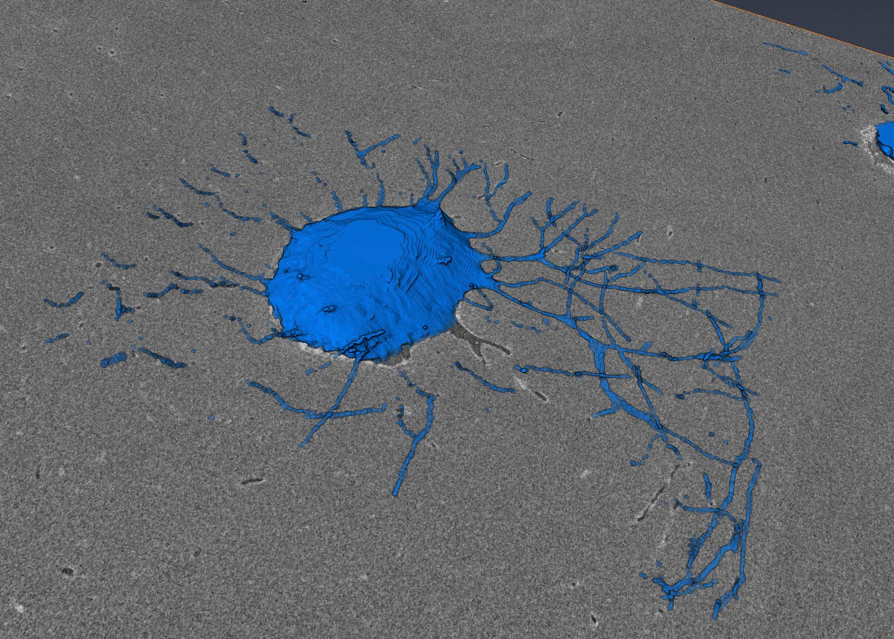
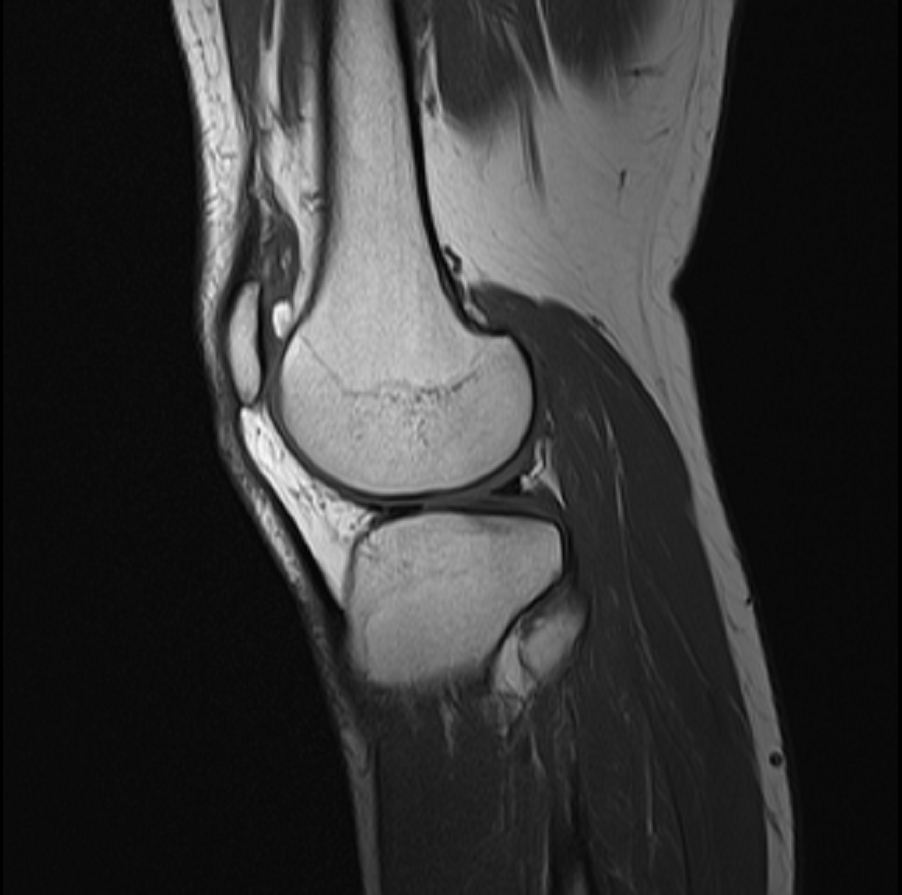
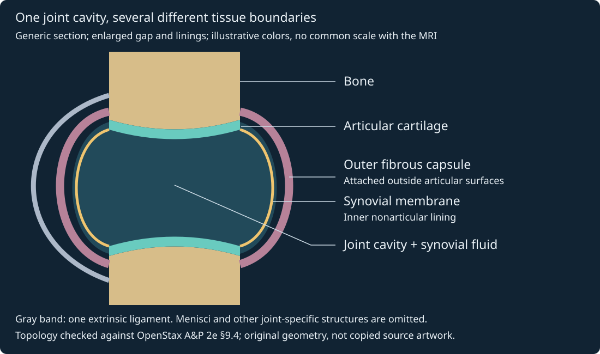
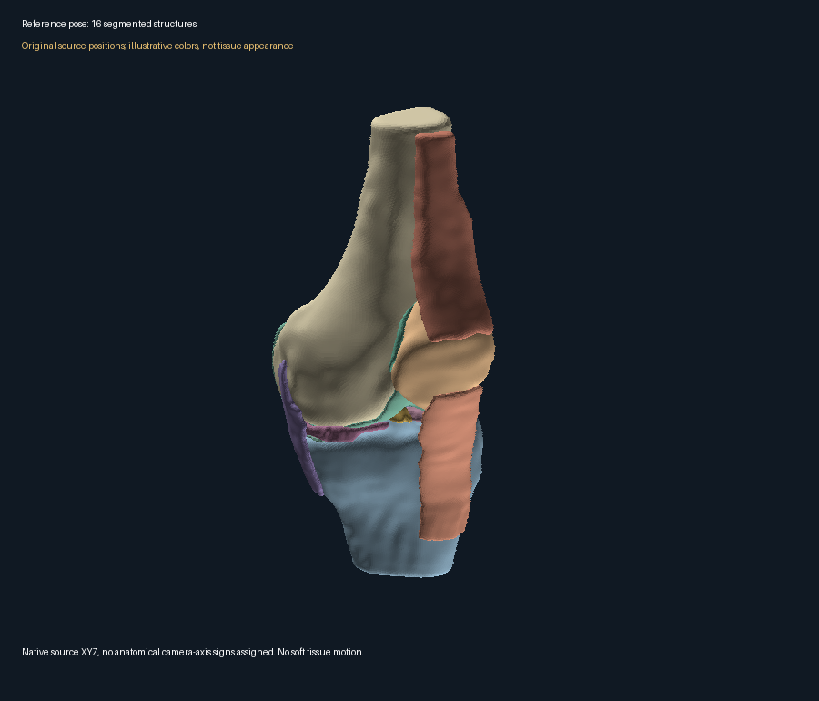

14. Bones, joints and connective tissues
A limb supports a load, bends at a joint and remains useful while its tissues are replaced. These are three different achievements. A stronger muscle can increase the internal force that bone must carry; an intact bone can surround a poorly functioning joint; and unchanged bone mass can conceal substantial tissue turnover. To explain a load-bearing limb, we must track the route of force, the architecture resisting it and the cells renewing that architecture. The same framework also explains why a swollen knee does not identify one torn structure.
The sequence follows lectures L31–32. Mechanical examples are original synthetic constructions without patient calibration. The abstract diagrams show constraints and bookkeeping; they are neither measured anatomy nor cartilage-contact simulations. Source access and correction details appear in §14.6.
14.1 Bone organization: a living load path L31 01:26
A bone is an organ containing mineralized connective tissue, vessels, nerves, surface tissues and, at many sites, marrow. Bone tissue, or osseous tissue, is one constituent of that organ. This distinction matters mechanically: an apparent hole in the mineralized lattice may contain marrow rather than being an empty defect. It also matters physiologically: blood-cell production occurs in a marrow environment, not inside each mineral crystal.
The axial skeleton comprises the skull and associated head/neck bones, vertebral column and thoracic cage. The appendicular skeleton comprises the limbs and their shoulder and pelvic girdles. Conventional adult counts are 80 axial and 126 appendicular bones, totaling 206. These count individual bones under an adult fusion convention, not 206 tissue types; accessory bones and developmental differences prevent a universal individual count. The rib cage protects thoracic organs, whereas abdominal skeletal coverage is partial. Mineral storage, marrow support and muscular leverage accompany structural support. See the owning skeletal divisions account.
Naming the load-bearing parts L31 05:34
The conventional skull count separates eight cranial bones from fourteen facial bones. Cranial bones are one frontal, two parietal, two temporal, one occipital, one sphenoid and one ethmoid. Facial bones are paired maxillae, zygomatic, nasal, lacrimal, palatine and inferior nasal conchae, plus an unpaired mandible and vomer. These are six pairs and two singles. Names shared with brain lobes provide orientation, not an exact map of underlying functional boundaries. The skull reference distinguishes brain case, facial support and the mobile mandible.
The vertebral column is bony; the spinal cord is nervous tissue protected within its canal. Seven cervical vertebrae C1–C7, twelve thoracic T1–T12 and five lumbar L1–L5 give 24 separate vertebrae. Counting the adult sacrum and coccyx as one bone each gives 26. The sacrum incorporates five sacral segments; the coccyx commonly incorporates four, with variation. Fusion explains the adult counting convention, not an asserted progressive shrinking of the coccyx. Cervical and lumbar curves bend oppositely to thoracic and sacrococcygeal curves; the column is not a straight stack. These relationships are checked against the vertebral-column account.
Shape classification asks another question. A long bone, such as a tibia, has an elongated shaft; the category includes small phalanges and does not mean every member is large. Short bones, such as many carpals at the wrist, have more comparable dimensions. Flat bones, including many cranial bones, provide broad surfaces; irregular bones, such as vertebrae, have more complex shapes. A sesamoid bone develops in a tendon; the patella is the prominent knee example. These shape categories do not classify microscopic matrix composition or the number of permitted joint motions.
Compartments connect circulation, growth and force L31 12:47
The diaphysis is a long bone's shaft; an epiphysis is an end, and the metaphysis is the intervening region. A growing bone has an epiphyseal plate, a hyaline-cartilage growth region, rather than an adult joint cavity inside the shaft. Periosteum is the vascular fibrous and cellular outer covering, absent over articular surfaces; endosteum lines internal bone surfaces. The medullary cavity is the marrow-containing internal shaft space. Nutrient, periosteal and metaphyseal vessels supply distinct routes into a living organ. Periosteum is not a mineral-hard sleeve. The long-bone reference locates these boundaries.
Red marrow supports hematopoiesis, blood-cell production, in a cellular vascular environment that includes stromal cells, macrophages and adipocytes. Adult active marrow includes sites such as sternum and pelvis; its distribution varies with age and site. Yellow marrow contains a larger adipose component. Neither label means that all trabecular spaces everywhere contain red marrow or that marrow fat supplies the shaft's main structural stiffness. Developing blood cells reach circulation through the marrow's blood-vessel system. The source's combined marrow-cell/blood/lymph route is not adopted: lymphatic drainage is not the route by which newly formed erythrocytes normally enter blood.
Material and architecture are separate determinants L31 17:05
Extracellular matrix is material deposited outside cells. Bone matrix combines predominantly type I collagen, mineral and water. Collagen's organized molecular/fibrillar structure and mineral reinforcement give a composite whose behavior cannot be inferred from either constituent alone. Ideal hydroxyapatite has formula \(\mathrm{Ca}_{10}(\mathrm{PO}_4)_6(\mathrm{OH})_2\); biological apatite contains substitutions and is not a chemically pure ideal crystal. The original study Minerals Form a Continuum Phase in Mature Cancellous Bone examines mineral organization in mature cancellous tissue, supporting a hierarchical composite rather than a loose pile of salts. It does not justify extrapolating its specimen microstructure to every bone site.
The source's water/collagen/mineral percentages lack a specified wet or dry mass basis, specimen and age. They are therefore not used as material parameters. The lecture's magnesium, fluoride and manganese examples likewise do not establish that increasing intake increases strength. A chemical constituent, an enzyme cofactor and a useful intervention are different claims. No supplementation or dose inference follows here.
Cortical, or compact, bone forms a relatively dense shell. Much mature cortical tissue contains osteons, cylindrical arrangements of lamellae, thin organized matrix layers, around vascular central canals. Trabecular, cancellous or spongy bone forms a network of mineralized plates and rods with marrow spaces. Its lower apparent density reflects architecture, not absence of mineral or conversion into soft sponge. Osteocytes occupy small matrix spaces called lacunae; fine canaliculi connect their processes and local fluid environment. The NIAMS bone account distinguishes the shell, lattice and cells. In the limb case, both local material quality and distribution of that material along the load path matter.
A modest mechanical derivation: why geometry matters
Consider an original idealization of a shaft as a straight, homogeneous annular beam with outer and inner radii \(r_o\) and \(r_i\), measured in meters, where \(0\le r_i<r_o\). Let \(A\) denote cross-sectional area and \(I\) its second area moment about a centroidal bending axis. In polar coordinates within the section, write \(y=\rho\sin\theta\), where \(\rho\) is radial distance in meters, \(\theta\) is polar angle in radians and \(dA=\rho\,d\rho\,d\theta\). Then
\[A=\int_{r_i}^{r_o}\int_0^{2\pi}\rho\,d\theta\,d\rho=\pi(r_o^2-r_i^2),\qquad I=\int_A y^2\,dA=\int_{r_i}^{r_o}\rho^3\,d\rho\int_0^{2\pi}\sin^2\theta\,d\theta=\frac{\pi}{4}(r_o^4-r_i^4).\tag{14.1}\]The angular integral equals \(\pi\), and the radial integral equals \((r_o^4-r_i^4)/4\). Thus \(A\) has units m² and \(I\) has units m⁴. Under pure bending, the neutral axis is the line in the section where longitudinal bending strain vanishes. For this symmetric homogeneous section it passes through the centroid. Let signed distance from it be \(y\), with opposite surfaces at \(y=+r_o\) and \(y=-r_o\). For small curvature \(\kappa\), measured in inverse meters, assume plane sections remain plane and choose signs so that longitudinal strain is \(\epsilon=\kappa y\). Strain is dimensionless. Linear elasticity with modulus \(E\), in pascals, gives stress \(\sigma=E\kappa y\). The bending moment is therefore \(M=\int_A y\sigma\,dA=E\kappa I\). Eliminating curvature gives extreme bending-stress magnitude \(|M|r_o/I\). A centered axial force \(N\), in newtons, independently contributes uniform stress \(N/A\). Taking tensile stress and axial force as positive, and choosing the sign of \(M\) to make its contribution positive at positive \(y\), linear superposition gives
\[\sigma(y)=\frac{N}{A}+\frac{My}{I}.\tag{14.2}\]The axis just defined belongs to the bending contribution; adding axial stress can shift the line of zero total longitudinal stress. For synthetic \(r_o=10\) mm and \(r_i=6\) mm, the program gives \(A=201.061930\) mm² and \(I=6836.105614\) mm⁴. Selected \(N=1000\) N and \(M=10\) N·m give axial stress 4.973592 MPa and extreme bending magnitude 14.628212 MPa. At \(y=+r_o\), where the chosen positive axial and bending stresses reinforce, stress is 19.601804 MPa; at \(y=-r_o\), the signed stress is \(4.973592-14.628212=-9.654620\) MPa to the shown precision. The negative value denotes compression under this tensile-positive convention. One megapascal is one newton per square millimeter. Increasing only the inner radius to 8 mm raises the reinforcing-side sum to 30.407652 MPa. Less load-bearing material increases stress under the same imposed loads.
The fourth power in \(I\) weights material far from the neutral axis strongly. This explains why shell geometry can resist bending efficiently without declaring a hollow tube stronger than a solid tube of the same outer radius. The latter has more material and larger \(I\). A real bone is curved, heterogeneous and direction dependent; trabecular support, muscle attachments, local damage and complex loads violate this idealization. No failure threshold was specified, so the computed stress cannot predict fracture. Geometry changes mechanical demand; it does not establish tissue tolerance.
14.2 Remodeling: replacing tissue while preserving a structure L31 19:45
Osteoblasts are matrix-forming cells derived from skeletal connective-tissue progenitors through an osteogenic, or bone-forming, lineage. They secrete osteoid, unmineralized organic bone matrix, whose subsequent mineralization changes material properties. Some become embedded osteocytes; other fates include surface-lining cells or cell death. Osteoclasts instead arise from a hematopoietic monocyte/macrophage lineage, with fusion generating multinucleated resorbing cells. There is no fixed requirement of exactly fifty precursor cells. Cell lineage identifies developmental origin; it is not a one-way age counter in which every mature osteoblast becomes an osteocyte and every old person acquires an inevitable osteoclast majority.
For detailed cell and marrow anatomy, see Endotext's bone ultrastructure chapter; the source-access limit is stated in §14.6.
Resorption removes existing mineralized matrix. At a resorbing surface, an osteoclast seals a local compartment and uses a specialized ruffled membrane to support acidification and secretion. Low pH dissolves mineral; proteolytic enzymes, notably cathepsin K, degrade organic matrix. Acid is not itself a lysosomal enzyme. In the original acidification-inhibition study, interventions affecting acidification and those affecting cathepsin K had distinguishable effects on human osteoclasts in vitro. The important inference here is separation of mineral dissolution, collagen degradation and cell abundance. More counted osteoclasts need not mean proportionally more effective resorption. Those experiments do not establish a treatment recommendation.
Remodeling couples removal and replacement at a tissue site: activation, resorption, a reversal transition, osteoid formation and mineralization restore or alter the local surface. Osteocytes participate in sensing and signaling, rather than merely being passive mature osteoblasts. Their communication helps coordinate cells at surfaces. Modeling changes bone size or shape through spatially less tightly coupled formation and resorption. Both can occur in a living skeleton; neither is synonymous with longitudinal growth. Remodeling can preserve total mass while renewing matrix, whereas a sustained imbalance changes mass and potentially architecture.
A volume balance makes that distinction explicit. Let \(B_k\) denote mineralized tissue volume in a defined region after cycle \(k\), in mm³. Let \(F_k\) be newly mineralized volume and \(R_k\) resorbed volume over that cycle, in the same units. Then bookkeeping requires
\[B_{k+1}=B_k+F_k-R_k.\tag{14.3}\]This equation counts completed tissue volumes; osteoid awaiting mineralization is outside \(B_k\). It does not supply a rate law, cycle duration, cell count or spatial distribution. With synthetic initial 1000 mm³, formation 9 mm³ and resorption 10 mm³ per cycle, twenty cycles leave 980 mm³. Formation and resorption both equal to 10 mm³ leave 1000 mm³ despite gross resorption of 200 mm³ over those cycles. The same balance can be applied regionally, but it cannot detect loss of a critical trabecular connection from total volume alone. That requires architecture measurements. Age, hormones, nutrition, disease and loading influence the processes; age alone does not determine one numerical balance.
Print equivalent: baseline mineralized tissue → local resorption → reversal → osteoid deposition → mineralization. Removing one selected unit and returning0.9 leaves a net deficit0.1 in this synthetic unit ledger. The separate equal-formation case restores the removed volume. Osteoclast and osteoblast roles are different; no cell turns directly into the other.
Development builds a template; remodeling renews it L31 22:36
Ossification means formation of bone tissue. Mesenchyme is embryonic connective tissue containing cells that can differentiate into skeletal tissue-forming lineages. Intramembranous ossification forms bone directly within mesenchymal connective tissue, including much of the cranial vault and mandible. Endochondral ossification forms bone through a cartilage template, as in long bones. These names distinguish developmental routes rather than early and later ages. In the endochondral route, the cartilage template grows, chondrocytes enlarge in a process called hypertrophy, and portions of its matrix calcify. Vascular invasion and bone deposition establish a primary shaft center and later secondary epiphyseal centers. Resorption and replacement help establish the marrow cavity. Articular cartilage remains on the joint surfaces in the mature bone. Growth-plate cartilage instead supports longitudinal growth until it is replaced at plate closure. The development reference establishes these route and compartment distinctions. Calcified cartilage and newly deposited bone are different tissues; calcification alone does not turn cartilage matrix into organized bone.
Longitudinal growth requires a maintained growth-plate organization and replacement on the shaft side. Adult remodeling does not reopen a fused plate. Nor should a developmental animation be relabeled as a time-lapse of adult remodeling: it would change the relevant cells, compartments and purpose. In the load-bearing limb, a developing shape and an adult surface-renewal process may share matrix chemistry while solving different problems.
Loading is an input, not a guarantee of stronger bone L31 23:51
Wolff's law is the historical adaptation principle that bone architecture responds to its mechanical environment. It is not a quantitative constitutive law stating that every pressure strengthens tissue. Forces generate local stresses and strains according to geometry; cells respond within a biological context. Damaging overload can overwhelm repair. A new loading environment can alter local formation and resorption without making every part of a skeleton denser. Equation (14.3) expresses the accounting consequence; it cannot infer the cellular response from external load.
Weight-bearing movement and muscular resistance can supply skeletal loading; NIAMS distinguishes these from other exercise goals. Swimming buoyancy and supported cycling generally provide less impact/weight-bearing stimulus than running. An original comparison of adolescent female athletes found site-specific bone-density differences associated with sport type; its observational design does not isolate exercise from all nutritional, hormonal or selection effects. This does not mean zero muscle force or zero health benefit, and it is not a universal ranking of every training protocol. The source visual distinguishes lower bone stimulation in swimming/cycling, whereas its captions group these with stronger-bone examples. The qualified distinction is retained; no exercise prescription is derived from the caption or the beam model.
Orthodontic tooth movement applies forces through the tooth's periodontal supporting tissues and induces local socket remodeling. In Yang and colleagues' original mouse study, deleting a bone-resorption signaling molecule from periodontal-ligament/bone-lining cells strongly reduced movement, connecting force application to cellular remodeling rather than passive sliding. This is mechanistic animal evidence, without a human rate extrapolation. It is not bare tooth sliding through an inert hole, nor a reason to treat any applied force as beneficial. The astronaut question changes the loading environment on a larger scale: microgravity reduces ordinary gravitational loading, while muscle forces and exercise remain. NASA's astronaut-exercise account reports that current exercise countermeasures do not eliminate all musculoskeletal loss. This supports altered loading as a physiological question, not a fixed loss rate for every bone or a guarantee that one exercise device prevents it.
14.3 Joints constrain motion and distribute force L32 01:50
A joint, or articulation, is a connection between skeletal elements; the tooth–socket connection is included in the anatomical classification. Freely moving joints need not involve bare bone touching bare bone. Arthrology studies joints; kinesiology studies movement; arthrokinematics describes relative articular-surface motions such as rolling, sliding and spinning. These terms repair the captions' “orthology” and “orthokinematics.” The ambiguous source synonym “arthrosis” is avoided here because it can also occur in disease terminology. A stable connection can be a joint even when little movement is permitted.
Structural classification identifies the connecting tissue and presence of a cavity. Functional classification identifies permitted movement: synarthrosis means immobile or nearly immobile, amphiarthrosis slightly mobile, and diarthrosis freely mobile. “Freely” still means constrained by geometry and tissues. Fibrous and cartilaginous classes each include more than one functional category; they are not a universal one-to-one code for immobility and slight mobility. Synovial joints are diarthroses. See the owning classification account.
| Structure | Subtypes and examples | Constraint that matters |
|---|---|---|
| Fibrous; no synovial cavity | Suture between cranial bones; syndesmosis between tibia/fibula; gomphosis anchoring tooth in alveolar socket | Fibrous collagenous tissue resists separation; ligament or interosseous membrane forms a syndesmosis, not a cartilage bridge. |
| Cartilaginous; no synovial cavity | Synchondrosis united by hyaline cartilage, including a growing epiphyseal plate; symphysis united by fibrocartilage, including pubic symphysis | A growth-state-dependent synchondrosis and a persistent symphysis are distinct. Pubic symphysis is not the hip ball-and-socket joint. |
| Synovial; cavity present | Elbow, knee, shoulder and many other joints | Articular surfaces are separated by the fluid-containing space; capsule, ligaments, geometry and muscles constrain movement. |
The fibrous-joint reference distinguishes sutures, syndesmoses and gomphoses. A fibrous connection can permit small motion rather than absolute rigidity. Its tooth example also illustrates why a load may be transmitted through an intervening ligament. The cartilaginous-joint reference separates hyaline synchondrosis from fibrocartilaginous symphysis. Two surfaces covered by separate cartilage layers across a cavity therefore do not constitute a cartilaginous joint in this classification.
Separate the surface, fluid space and capsule L32 07:15
Articular cartilage covers the articulating bone surfaces. The synovial cavity is the intervening fluid-containing space. A fibrous joint capsule encloses the joint, while synovial membrane lines appropriate internal nonarticular surfaces and contributes to the fluid environment. These are distinct structures, not three names for a soft pad. Ligaments and surrounding muscles add constraints and stabilization. Synovial-joint anatomy supports this arrangement. Lubrication reduces friction; neither the fluid nor cartilage makes friction mathematically zero.
A degree of freedom is an independently variable coordinate needed to specify configuration under a model's constraints. One angle can describe an ideal hinge, but it does not describe every relative displacement of a real knee. Knee flexion involves coupled rolling/sliding and rotation, with changing contact and ligament recruitment. A bone-surface mesh alone would still not identify cartilage thickness, ligament attachments or a measured trajectory. Motion must therefore be interpreted at the model's own level of fidelity.
| Type | Geometry and motion | Example |
|---|---|---|
| Ball-and-socket | Rounded head in socket; three rotational directions | Shoulder, hip |
| Hinge | Predominantly one angular coordinate | Humeroulnar elbow, interphalangeal joints; knee is a modified, more complex example |
| Pivot | Rotation around a longitudinal axis within a bone/ligament ring | Proximal radioulnar, median atlantoaxial joint |
| Planar | Small gliding motions between approximately flat surfaces | Many intercarpal and intertarsal articulations |
| Condyloid, or ellipsoid | Oval convex and concave partners; two principal angular directions | Radiocarpal wrist, metacarpophalangeal joints |
| Saddle | Reciprocal concave/convex curvatures in perpendicular directions; biaxial motion with coupled behavior | Thumb carpometacarpal joint between trapezium and first metacarpal |
The selected-joint anatomy account adds the coupled knee and jaw relationships that a geometry taxonomy alone omits. The thumb example matters for the load-bearing argument: grasp can reorient a contact force through opposition. It does not make all fingers saddle joints. Finger interphalangeal motion and metacarpophalangeal motion have different structural classifications. The table is a first model of allowed motion, not an anatomical surface atlas.
Name motion relative to a posture and axis L32 08:38
Use anatomical position: upright, arms at sides, palms forward. Anterior means toward the front of the body, posterior toward the back, superior toward the head and inferior toward the feet. Medial means toward the body's midline and lateral away from it. A sagittal plane separates left and right portions; a frontal plane separates anterior and posterior portions; a transverse plane separates superior and inferior portions. Flexion/extension generally decrease/increase a joint angle; hyperextension extends beyond the reference position. Abduction/adduction move away from/toward a reference midline, with digit-specific reference axes. Rotation turns about a longitudinal axis. Circumduction combines angular motions so a distal part traces a cone; it is not pure axial rotation. Gliding translates adjacent surfaces. These are not all forms of gliding.
Lateral flexion bends the trunk or neck sideways. Elevation/depression move upward/downward; protraction/retraction move anteriorly/posteriorly, as at the mandible. Dorsiflexion/plantar flexion bring the foot toward the shin/point it away. Inversion/eversion turn the sole medially/laterally. Forearm supination/pronation orient the palm forward/backward from anatomical position. Thumb opposition brings the thumb across the palm and orients it toward a finger for tip or pad contact on the same hand; reposition returns it toward the anatomical position beside the index finger. This compact vocabulary preserves the source movement table; see movement definitions.
Tendon, cartilage, fascia and ligament perform different jobs L32 14:57
A tendon transmits muscle force to skeletal attachment, usually bone. A ligament connects bones and constrains their relative movement. Their collagen organization favors tensile force transmission along recruited fibers; neither is an ideal rigid string. The Achilles tendon transmits calf-muscle force to the calcaneus, the heel bone. These selected tissues are not an exhaustive list of connective tissues. The connective-tissue reference distinguishes dense fibrous tissues from cartilage and other classes.
In our original planar lever, choose a downward load \(W\), in newtons, acting a perpendicular distance \(d\) from a pivot, and an opposing upward tendon force \(F_T\) with moment arm \(r\), both lengths in meters. The moment arm is perpendicular distance from the axis to the force line, not necessarily attachment distance along bone. Static moment balance requires \(F_T r=Wd\), hence
\[F_T=\frac{Wd}{r}.\tag{14.4}\]For synthetic \(W=50\) N, \(d=0.30\) m and \(r=0.04\) m, tendon force is 375 N. Vertical force balance requires a 325 N downward pivot reaction on the ideal lever. The internal force exceeds the external load because the tendon has a short moment arm. Doubling \(r\) at the same imposed load halves required tendon force. In a real joint, angle-dependent moment arms, multiple muscles and co-contraction change reaction forces. Equation (14.4) is not a measured elbow or knee load. It explains why “only carrying fifty newtons” does not imply that every tissue carries fifty newtons.
Cartilage has cells called chondrocytes within a hydrated matrix. Hyaline cartilage occurs at many articular surfaces, nose and trachea, and in thyroid cartilage. Fibrocartilage occurs in menisci, intervertebral discs and pubic symphysis; elastic cartilage supports structures such as the external ear and epiglottis. Matrix composition and fiber architecture differ; “elastic” is a tissue category rather than a promise that every cartilage deforms identically. Mature cartilage is avascular, with nutrient transfer through the matrix by diffusion; surrounding tissues and synovial fluid contribute according to site. Articular cartilage lacks a perichondrial covering. Restricted access and specialized organization help explain limited intrinsic repair, without implying that all cartilage injuries have the same prognosis.
A collagen network supplies tensile restraint while proteoglycans, matrix macromolecules bearing charged sugar chains, contribute to a hydrated matrix resisting compression. Low permeability limits rapid fluid escape under load; solid deformation and fluid pressure consequently evolve together. Cartilage mechanics is time dependent because both solid matrix and interstitial fluid carry load. Interstitial fluid here means water within the cartilage matrix, not merely free synovial fluid outside it. In the original unconfined-compression study, human and bovine specimens were tested to separate fluid load support from total load. The result supports a material mechanism; it does not give a universal human knee coefficient or a complete in vivo contact solver.
An original synthetic held-load model isolates that distinction. Let total compression \(F_0\) remain constant in newtons. Let fluid-carried force \(F_f(t)\) relax from fraction \(\alpha\), with \(0\le\alpha\le1\), and let \(\tau>0\) be a selected time constant in seconds. Assign the remaining force to the solid matrix, \(F_s(t)\):
\[F_f(t)=\alpha F_0e^{-t/\tau},\qquad F_s(t)=F_0-F_f(t),\qquad t\ge0.\tag{14.5}\]This exponential is a teaching law, not a fit or a derivation from cartilage permeability. With \(F_0=600\) N, \(\alpha=0.8\) and \(\tau=30\) s, fluid/solid forces are 480/120 N initially, 176.582132/423.417868 N at 30 s and 23.897793/576.102207 N at 90 s. Total force stays 600 N while its partition changes. The zero-fluid limit places all force on solid immediately. The long-time limit does the same gradually. Neither implies loss of total load or prediction of deformation.
Print equivalent: W=50N at 0.30m and upward tendon force375N at 0.04m balance moments; pivot reaction is325N downward. Separately, a held600N is shared by fluid/solid at0s:480/120N;30s:176.582132/423.417868N;90s:23.897793/576.102207N. The two panels are separate constructions, not one joint simulation.
Mean compressive pressure is total normal force divided by contact area. A synthetic600 N over300 mm² gives2 MPa; halving area at fixed force gives4 MPa. A meniscus is a fibrocartilaginous structure whose geometry and attachments help distribute load. It is not a ligament and not simply the articular hyaline covering. The mean-pressure calculation explains one possible consequence of reduced effective area, but actual contact is nonuniform. It cannot predict an injured person's pressure map or decide whether a meniscus should be repaired.
Fascia comprises connective-tissue sheets and related tissue planes around muscles and organs. Superficial fascia is associated with subcutaneous tissues; deep fascia invests and separates muscle regions; visceral fascia supports organ-related planes. Terminological scope varies. Stecco and colleagues' anatomical account describes regional fascial layers and continuity. Support, force transmission and relative gliding do not make every sheet a sealed fluid barrier. A continuous connective-tissue network also does not, by itself, establish a universal causal account of posture, symptoms or a treatment effect.
Observe a structure before assigning its mechanism
The following panels answer different questions. Recorded microscopy resolves a prepared bone-cell environment; MRI supplies a joint section; a generic reconstruction separates tissue boundaries; and segmented source surfaces expose three-dimensional shape. They are separate specimens and scales. None alone measures material strength, fluid load support or a living knee's motion.







A source pose is more than a hinge angle
The owning model description treats the bones as rigid and demonstrates passive flexion. Its tibia and fibula are fixed, while the femur and patella can move. The acquired log supplies each bone's current reference point \(c(t)\) and unit quaternion \(q(t)\), in component order \((x,y,z,w)\). If \(x_0\) is a reference vertex and \(c_0\) its bone's input-defined reference point, the displayed position is \(x(t)=c(t)+R(q(t))[x_0-c_0]\), where \(R\) is the active proper rotation. This preserves distances within a bone. The point called a center of mass in the input is not assumed to be a measured anatomical centroid.
The replay is conditional: documentation supports shared source coordinates, but exact correspondence between these smoothed surfaces and the simulation's missing volume mesh has not been independently established. Quaternion conventions were checked against owning theory and version-3 source; the native log identifies FEBio 2.9.1. No simulation was rerun. These limits permit an inspectable source-based illustration, not a validated experiment or patient prediction. The load coordinate 0–1 describes prestrain/equilibration and 1–2 prescribed flexion; it is not two seconds of human movement. Displayed joint-coordinate flexion and moment are source-reported scalars on that same load coordinate, not world Euler angles or a torque arrow.
Static counterpart: panel 14.3D is the untransformed reference geometry. The conditional replay keeps tibia/fibula fixed and moves femur/patella using native reference-point/quaternion records. No soft-tissue strain, cartilage contact pressure, fluid motion or world force vector is reconstructed. The independent lever and held-load constructions in Figure 14.2 retain their own assumptions; they are not driven by this pose record.
Injury identifies failed structures, not one universal diagnosis L32 18:34
The anterior cruciate ligament (ACL) and posterior cruciate ligament (PCL) cross within the knee; their anterior/posterior names refer to tibial attachment regions, not merely which lies nearest the front of a picture. ACL fibers chiefly resist anterior tibial translation relative to the femur and contribute rotational constraint; the PCL chiefly resists posterior tibial translation. The medial, or tibial, collateral and lateral, or fibular, collateral ligaments are different structures from the cruciates. The caption's “lateral cruciate” label for the fibular collateral ligament is corrected. The AOSSM ACL account and AAOS PCL account support these principal constraint directions. An attachment-aware diagram is needed to infer fiber recruitment; a pair of crossing lines cannot supply it.
The source's football example combines a lateral blow with a planted foot and injuries to the medial collateral ligament, ACL and medial meniscus. This traditional combined-injury pattern is a possible mechanism, not a universal triad or frequency statement. Meniscal damage also occurs through other mechanisms, and sport, age, exposure and case definition change injury distributions. No denominator supports the captions' repeated claim that most athletes' knee injuries are ACL tears. AAOS's meniscus account distinguishes acute and degenerative injury and the importance of tear location and vascular supply.
Rehabilitation seeks functional recovery through a structured process; reconstruction replaces a damaged ligament's function using a graft, rather than simply gluing bones together. The AAOS ACL account, checked 4 November 2026, bases management on instability, activity goals and associated injuries as well as structural severity. It includes selected complete tears among nonsurgical cases. Thus a visually estimated ninety-to-one-hundred-percent tear does not by itself mandate surgery or promise restored normal function. Rehabilitation remains relevant after reconstruction. This is a correction of a universal source claim, not a patient-specific treatment choice.
Effusion is excess fluid within a joint cavity; hemarthrosis is blood within it. Injury can disrupt vessels and cause bleeding, while inflammatory activity can increase synovial fluid accumulation. Swelling may also involve tissues outside the cavity. Timing and accompanying findings help frame an investigation but do not uniquely identify the injured tissue or distinguish every traumatic, inflammatory and infectious cause. The historical NIAMS knee-problems account explicitly distinguishes bleeding after vascular damage from delayed inflammation-related fluid accumulation; it is used for mechanism, not current management. “Water on the knee” describes an observation, not a diagnosis.
The opening limb can therefore fail at several levels: a changed bone cross section raises stress, a disrupted ligament changes constraints, meniscal damage changes contact, or synovial inflammation changes the fluid environment. The same external swelling does not choose among them. Nor does restoring total bone volume prove that these other structures have recovered.
The NIDCR jaw-joint overview distinguishes joint and disc disorders from the broader chewing-muscle system. The closing chewing question is a useful counterexample to a rigid hinge taxonomy. The temporomandibular joint, connecting mandible to temporal bone with an articular disc, combines rotation and translation. Mandibular elevation/depression, protraction/retraction and side-to-side excursions contribute to mastication. A hinge-only cartoon cannot reproduce the whole chewing path; the movement vocabulary and the disc-containing joint architecture must be used together.
14.4 Reproduce the force and renewal checks
The standard-library program ch14_mechanics.py implements equations (14.1)–(14.5) as independent functions. The inputs are selected geometry, forces, completed tissue volumes and a held-load time constant. Outputs are forces, areas, second moments, stresses and volume balances; the program writes no files and performs no network operation. Nonfinite values and invalid dimensions are rejected. The geometry routine accepts a solid circle as the zero-inner-radius limit. The volume routine rejects a negative terminal inventory but permits zero; it checks aggregate bookkeeping, not the ordering or local physiological feasibility of resorption and formation within a cycle.
python -X utf8 code/ch14_mechanics.py
lever: tendon=375.000000 N; reaction=325.000000 N downward
tube ri=6 mm: A=201.061930 mm2; I=6836.105614 mm4;
axial=4.973592 MPa; bending=14.628212 MPa;
same-side sum=19.601804 MPa
tube ri=8 mm: A=113.097336 mm2; I=4636.990757 mm4;
axial=8.841941 MPa; bending=21.565710 MPa;
same-side sum=30.407652 MPa
remodeling: 980.000000 mm3; balanced=1000.000000 mm3
held load t=0 s: fluid=480.000000 N; solid=120.000000 N
held load t=30 s: fluid=176.582132 N; solid=423.417868 N
held load t=90 s: fluid=23.897793 N; solid=576.102207 NThese computed outputs were obtained on 4 November 2026. Checks separately enforce moment balance and vertical force balance, area scaling by the square of length and second-moment scaling by its fourth power, zero-load and solid-circle limits, balanced and unbalanced turnover, nonnegative force components and constant total force over 1001 sampled loading states. Eight invalid-input cases are required to fail. These are meaningful mathematical checks; passing them does not validate an anatomical material coefficient, a tissue healing rate, a motion trajectory or an exercise intervention. The animation uses pure phase-state functions so seeking and stepping expose the same state as playback. Actual browser and anatomical visual acceptance are separate checks.
14.5 Six problems with fully worked solutions
Problem 14.1. Reconcile three counts and two scales
A proposed atlas labels206 “bone types,” eight “all skull bones” and26 “spinal-cord bones.” Repair each label, show the relevant counts and explain why red marrow is not the same object as trabecular bone.
Worked solution
The206 convention counts adult bones:80 axial plus126 appendicular. Shape categories and tissues are different classifications. Eight counts cranial bones: frontal1, parietal2, temporal2, occipital1, sphenoid1 and ethmoid1. Adding fourteen facial bones gives22 in the conventional skull inventory; the associated ear ossicles and hyoid belong in the larger axial account rather than silently changing that skull definition. The vertebral column contains7 cervical+12 thoracic+5 lumbar+one adult sacrum+one coccyx=26 counted bones. The spinal cord is nervous tissue, not a row of bones.
Trabeculae are mineralized plates and rods; marrow occupies spaces among them and has blood-forming, vascular, stromal and adipose components. A scan of trabecular architecture and a measure of hematopoietic function therefore interrogate different objects. Neither the206 total nor the26 adult fusion convention is a universal count of every person's unfused developmental segments.
Problem 14.2. Derive a scaling test before trusting stress output
Double both annular radii, keep axial force and bending moment fixed, and predict the changes in axial and extreme bending stress. Explain why a program reporting the same stress after this scaling is suspect.
Worked solution
Equation (14.1) gives area multiplied by four and second moment multiplied by sixteen. Axial stress N/A therefore becomes one quarter. Extreme bending stress Mr_o/I has a numerator doubled and denominator multiplied by sixteen, so it becomes one eighth. The different exponents arise because the bending calculation weights material by squared distance from an axis and evaluates stress at a surface whose distance also changes. These are exact scaling results within this homogeneous linear beam model.
A same-stress output could indicate millimeters treated as meters, an unchanged area, or force/moment inadvertently scaled with size. It might also implement a different loading boundary condition, which would need to be stated. The test checks dimensional and algebraic consistency before biological interpretation. Real geometric similarity does not guarantee identical material, muscle loading or fracture behavior.
Problem 14.3. Stable mass can conceal renewal
Use twenty cycles with initial tissue volume1000 mm³ and resorption10 mm³ per cycle. Compare formation9,10 and11 mm³ per cycle. Could equal total volume establish equal architecture, and why should the formation input specify mineralized rather than merely secreted matrix?
Worked solution
Summing (14.3) gives B_20=1000+20(F−10). The three results are980,1000 and1020 mm³. The balanced case has gross resorption200 mm³ and gross formation200 mm³, despite zero net change. Thus net volume alone cannot reveal turnover magnitude. A snapshot count of cells does not substitute for those integrated tissue fluxes.
Equal volume could be arranged as a well-connected lattice or disconnected fragments, or redistributed nearer/farther from a bending axis. Equal volume therefore does not establish equal stiffness or strength. If formation counts osteoid before mineralization while B counts mineralized tissue, the balance adds unlike states. One must either count completed mineralized formation or add an osteoid compartment and its mineralization flux. The simple equation uses the former convention.
Problem 14.4. Repair a classification and movement map
A diagram connects tibia and fibula with cartilage, labels the pubic symphysis a hip ball-and-socket, assigns saddle joints to every finger, and makes chewing a pure hinge motion. Repair it and identify which errors confuse tissue, geometry and motion.
Worked solution
The tibiofibular syndesmosis uses fibrous tissue, through ligaments/interosseous connections, rather than a cartilage bridge. The pubic symphysis joins the two pubic regions by fibrocartilage; the hip articulation is between femoral head and acetabulum and is synovial ball-and-socket. The thumb carpometacarpal joint is the saddle example; finger interphalangeal joints are hinge examples and metacarpophalangeal joints are condyloid examples. Chewing uses disc-associated rotation and translation with elevation/depression, protraction/retraction and lateral excursions.
The first error assigns the wrong connecting tissue. The second confuses an anatomical location with a particular joint and structural class. The third overgeneralizes one joint geometry across a region. The fourth replaces a multi-component trajectory with one coordinate. Structural and functional classifications must be tracked separately: a fibrous connection can allow slight movement, and free synovial mobility remains constrained.
Problem 14.5. Account for every force before inferring pressure
Use W=50 N, d=0.30 m and r=0.04 m in the parallel-force lever. Find tendon force and pivot reaction. Separately consider600 N normal compression over300 mm² or150 mm². Does halving contact area double tendon force? What is the fluid-carried force at30 s in (14.5)?
Worked solution
Moment balance gives F_T=(50×0.30)/0.04=375 N upward. Summing vertical forces on the lever gives375−50+R=0, hence signed reaction R=−325 N:325 N downward. A diagram showing only the first two forces would have balanced torque but unbalanced force. Mean pressures in the separate contact example are600/300=2 N/mm²=2 MPa and600/150=4 MPa.
Area is absent from the imposed lever moment balance, so its halving does not itself double tendon force. Coupling would require an explicit geometry/contact model. With synthetic alpha0.8 and tau30 s, fluid force at30 s is480e^−1=176.582132 N; solid force is600−176.582132=423.417868 N. Neither the force partition nor mean pressure determines cartilage strain without a constitutive and boundary-value model. The calculations are deliberately separate to prevent importing unsupported coupling.
Problem 14.6. Diagnose the inference, not a patient
A report concludes: “Swelling proves an ACL tear; a complete tear mandates reconstruction; exercise in space prevents all bone loss; any loading makes bone stronger.” Identify what evidence is missing in each inference and propose one scientifically useful measurement for the opening limb case.
Worked solution
Swelling does not identify the compartment or cause. Effusion, hemarthrosis and extra-articular swelling differ, and several injured or inflamed structures can produce overlapping observations. Structural examination and appropriate imaging or fluid investigation, chosen in clinical context, would be needed rather than a photograph-based ACL assignment. Management of an established ACL tear also depends on instability, associated damage and activity goals; structural completeness alone does not select the treatment. Reconstruction and rehabilitation are different processes and neither guarantees a universal normal outcome.
Exercise-countermeasure use does not prove full protection of every astronaut's skeletal site. The measured outcome, exposure, countermeasure implementation and site must be specified. Similarly, adaptive loading competes with damage and repair and depends on material state; “any loading strengthens” omits overload and biological context. For the opening case, simultaneous force/geometry measurements would constrain stress estimates, regional architecture measurements would interrogate the load path, and longitudinal formation/resorption measurements would distinguish turnover from net volume. One would select a measurement according to the question rather than treat all these endpoints as a single strength score. This is an experimental inference exercise, not a clinical testing protocol.
14.6 Evidence and boundaries
Source checks were performed on 4 November 2026. The lecture spine supplies the nomenclature, developmental routes, adaptation questions and joint/tissue sequence; independent sources correct biological and clinical generalizations. Original teaching constructions supply the beam derivation, lever, turnover ledger and exponential load partition. No mathematical check establishes tissue repair, patient strength or a measured contact trajectory.
Complete captions through both closing activities were read. The separate bounded source audit inspected six contact sheets containing 103 sampled stills and 15 repeat native-frame views; those observations are attributed, not claimed as continuous viewing by this author. Source corrections and research extensions are identified beside their claims. The abstract diagrams do not supply realistic anatomy or measured joint motion.
- Lecture source: L31, bones and L32, joints and connective tissues, from the official NPTEL course102106670. Complete captions were read, including orthodontics, astronaut activity, injury/effusion and chewing. The bounded visual audit adds the movement table, tissue examples and source-slide/caption mismatches. It does not establish microscopic geometry or quantitative material laws.
- Owning teaching references: OpenStax Anatomy and Physiology2e, linked at the anatomy claims above: skeletal divisions, skull, vertebral column, bone classification/structure/development, connective tissue, joint classification and fibrous/cartilaginous/synovial classes and movements. These are anatomy checks, not redistributed figures or copied prose. Terminology and clinically absolute shorthand are assessed rather than reproduced automatically.
- Government physiology accounts: NIAMS, What Is Bone? and Exercise for Your Bone Health; NASA, Astronaut Exercise. Read for cellular roles, adaptation and countermeasure limits. No numerical human adaptation law is inferred.
- Bone research: Minerals Form a Continuum Phase in Mature Cancellous Bone, original structural study; Acidification of the Osteoclastic Resorption Compartment Provides Insight into the Coupling of Bone Formation to Bone Resorption, original cell/animal experiments. Indexed original text/abstract passages were accessible; direct PMC retrieval returned a browser challenge. Their specific mechanism distinctions are used, without claiming complete paper reading or clinical efficacy. Endotext, Anatomy and Ultrastructure of Bone, indexed cell and matrix passages, supports marrow and lineage context; direct retrieval also challenged.
- Cartilage experiment: Cartilage Interstitial Fluid Load Support in Unconfined Compression, original human/bovine specimen study, indexed abstract and introduction read; direct retrieval challenged. Supports the fluid/solid distinction. Equation (14.5) and every coefficient in it are original synthetic choices, not experimental fits.
- Fascia: Stecco et al., The fascia: the forgotten structure, Italian Journal of Anatomy and Embryology116,127–138(2011), PubMed abstract read. Supports layered anatomy and continuity, without universal posture or therapy claims.
- Clinical claim boundaries: AAOS ACL Injury: Does It Require Surgery? and Meniscus Tears, owning current educational accounts. Used for context-dependent management and injury/vascular distinctions, not prescriptions. The historical NIAMS knee-problems publication linked above supports bleeding versus synovial effusion only.
- Reproducibility and visual scope: Python source, deterministic abstract state/controls and state checks. No expert-source mesh, measured knee trajectory, histology image or realistic tissue material is delivered by these schematic files. The separate observed references and source-surface replay in Figures 14.3–14.4 have their own provenance and limitations. Public replay and still-reproduction instructions distinguish these outputs from the native-log producer workflow; no rerun of the finite-element model is claimed.
The load-bearing limb is now a sequence of connected questions: what tissue occupies each compartment, where forces act, how geometry distributes stress, which constraints permit movement and how formation and resorption renew the load path. An internal force can exceed the carried load; unchanged volume can coexist with substantial turnover; and a joint can lose function while its bones remain intact. Each conclusion names its measured or modeled object, preserving the boundary between a useful mechanical explanation and an anatomical or clinical claim.